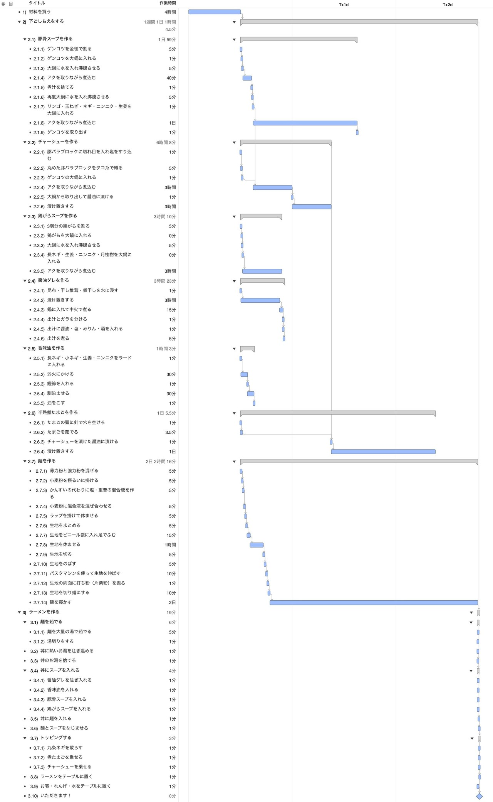
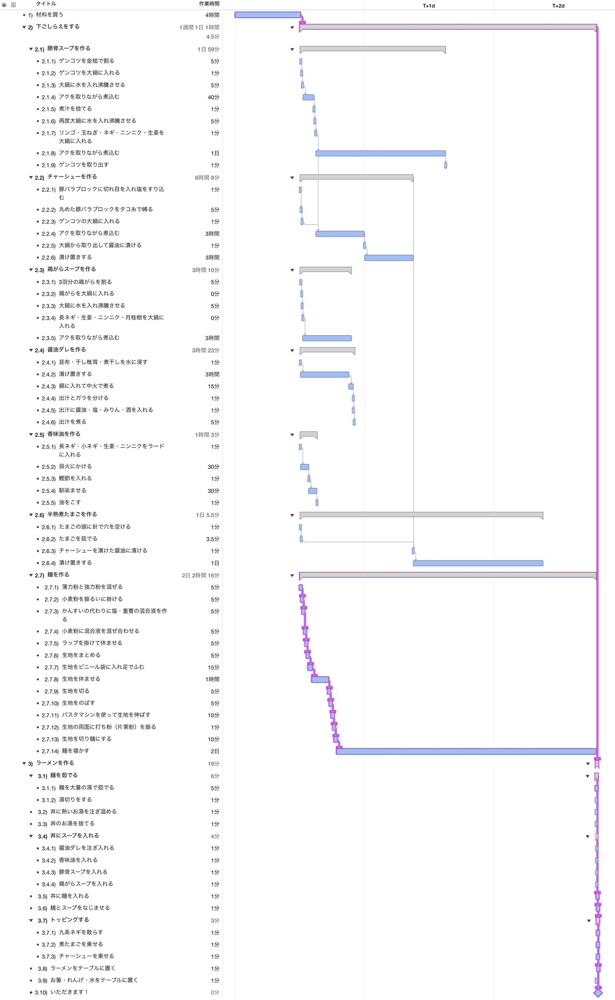
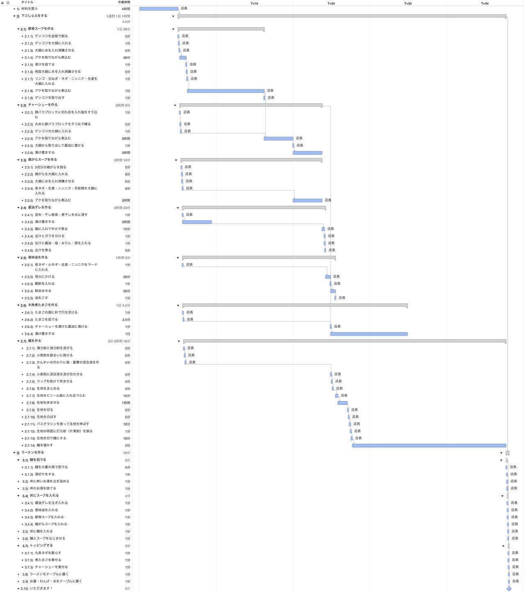
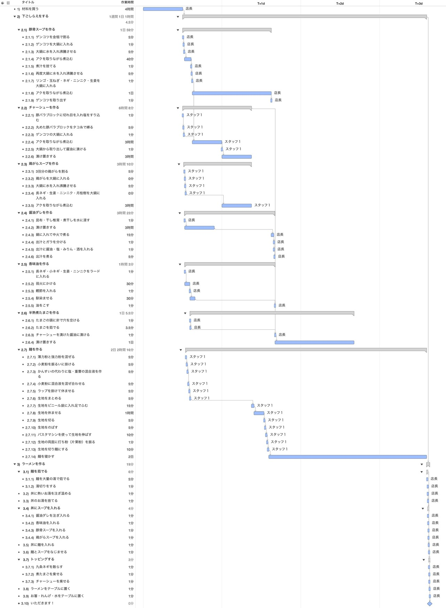

豚骨ラーメンを作るWBSを作ってみた
今回は「WBSで覗いてみた」として、日常的に親しまれている豚骨ラーメンのレシピを題材に「豚骨ラーメンを作るWBS」を作成しました。スープや麺の仕込みから完成に至るまでの作業分解、クリティカルパスの特定、さらには担当者1人に集中させた場合の工期延伸やスタッフ追加による短縮効果まで、WBSを通じて詳しく検証していきます。
※そもそも「WBSとは何か？」について詳しく知りたい方は、こちらの記事「WBSの勘所」も合わせてご覧ください。
1. 豚骨ラーメンプロジェクトのWBSを作る
まずは豚骨ラーメンの本格レシピを参考に、完成までの全作業をWBSに分解してみましょう。
今回参考にしたのは、豚骨スープや自家製麺の作り方が非常に丁寧に解説されている「ぷちぐる」さんのレシピです。
このレシピを元に作成した、豚骨ラーメンプロジェクトのWBSがこちらです。

一連の工程を書き出してみると、豚骨の下処理からスープの煮込み、麺打ちなど、非常に多くの手間と時間がかかることが分かります。ざっと作業を並べただけでも全体で3日間の工期が必要です。
ここで、プロジェクト全体のスケジュールを左右する最長経路であるクリティカルパス（ピンク色の作業）を確認してみましょう。

クリティカルパスを見ると、ラーメン作りの工期を短縮するためには麺作りの工程を短縮する必要があることが分かります。ただし、麺の熟成にはどうしても最後に2日ほど寝かせる期間が必要なため、単独ではこれ以上の圧縮が難しいことも見えてきます。
2. 豚骨ラーメンを全て店長に作らせてみる
続いて、この作業をすべて店舗の店長1人に担当させた場合をシミュレーションしてみます。ガントチャート上でリソースを店長1人に集中させ、作業の重複を解消する「平準化」を行います。

平準化を行った結果、並行作業が直列化し、当初3日だったプロジェクト期間が一気に5日まで延びました。
ただし、WBSのスケジュールを詳細に確認すると、4日目は店長が稼働していない日（待ち時間など）が発生していることが分かります。このように工程の空白を把握できれば、この日を店舗の休日に設定するなど、現実的な運用計画に活かすことができます。
3. スタッフを1名雇ってみる
5日間の工期を短縮するため、新たにスタッフを1名追加（合計2名体制）して作業を分担してみましょう。
クリティカルパスとなっている麺作りの工程を支援しつつ、店長にかかる負荷を適切に分散して平準化を行います。

スタッフを追加したことで、全体の工期を4日まで短縮することができました。なお、このスケジュールでも3日目には作業の空き日が発生しているため、仕込みと営業のローテーション計画を立てる際の良い目安になります。
終わりに
いかがでしたでしょうか。身近なラーメン作りであっても、WBSに落とし込んでクリティカルパスやリソース（人員）の割り当てを検証することで、ボトルネックの発見や工期の変化が明確になります。
WBSはプロジェクトの構造化と見通しを向上させる強力なツールです。今回の検証が、日常の業務やプロジェクト計画におけるスケジュール設計のヒントになれば幸いです。
なお、プロジェクト計画の基礎となるWBSの作り方や平準化の考え方については、「WBSの勘所」や「ガントチャートの決め手は平準化」でも詳しく解説していますので、ぜひ合わせてご覧ください。
最後までお読みいただきありがとうございました。